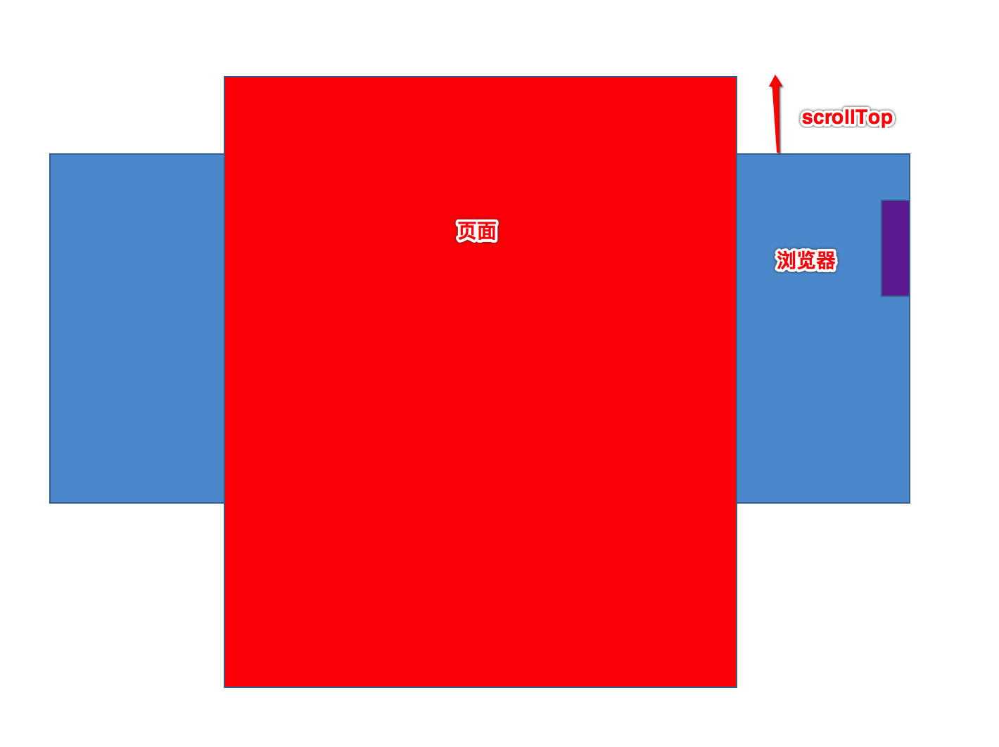
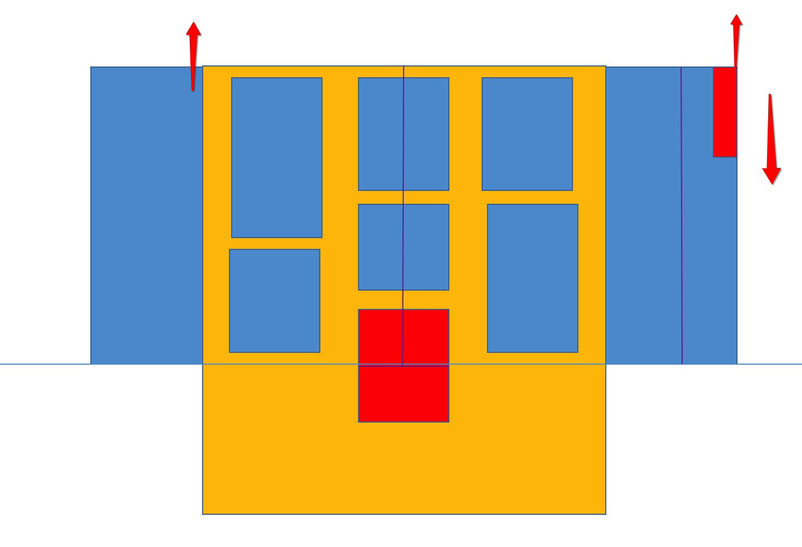

1）求滚动条的长度？ 2）拖动滚动条，求内容要走多少？
滚动条的长度取决于滚动内容（滚动内容越长，滚动条越短）；
内容滚动的距离和滚动条走的距离是成倍数关系。
获取滚动条的长度：
滚动条的长度 / 盒子的长度 = 盒子的长度 / 内容的长度
滚动条长度 = ( 盒子的宽度 / 内容的宽度) * 盒子的宽度
拖动滚动条，求内容走的长度：
Document 对象是 Window 对象的一部分，可通过 window.document 属性对其进行访问
Document 对象使我们可以从脚本中对 HTML 页面中的所有元素进行访问:
document.head（获取头部）
document.body（获取身体）
document.title （获取标题）
document.documentElement（获取整个html)
Document.compatMode:
BackCompat：标准兼容模式关闭
CSS1Compat：标准兼容模式开启
BackCompat 对应 quirks mode(怪异模式) , CSS1Compat 对应 strict mode (严格模式) ：
早期的浏览器Netscape 4和Explorer 4对css进行解析时，并未遵守W3C标准，这时的解析方式就被我们称之为quirks mode(怪异模式)，但随着W3C的标准越来越重要，众多的浏览器开始依照W3C标准解析CSS，仿照W3C标准解析CSS的模式我们叫做strict mode(严格模式) 。
网页正文全文宽： document.body.scrollWidth;
网页正文全文高： document.body.scrollHeight;
网页被卷去的高： document.body.scrollTop;
网页被卷去的左： document.body.scrollLeft;
在实际开发中使用比较多的就是scrollTop，如下图： 
window.pageXOffset; （scrollLeft）
window.pageYOffset; （scrollTop）
Firefox浏览器 和 其他浏览器
document.documentElement.scrollTop;
Chrome浏览器 和 没有声明 DTD <DOCTYPE >
document.body.scrollTop;
兼容写法 var scrollTop = window.pageYOffset || document.documentElement.scrollTop || document.body.scrollTop || 0; var scrollLeft = window.pageXOffset || document.documentElement.scrollLeft || document.body.scrollLeft || 0;
把内容滚动到指定的坐标
格式：scrollTo(xpos,ypos)
xpos 必需；要在窗口文档显示区左上角显示的文档的 x 坐标；
ypos 必需；要在窗口文档显示区左上角显示的文档的 y 坐标 。
JSON(JavaScript Object Notation) 是一种轻量级的数据交换格式。它基于ECMAScript的一个子集。相比于XML，json易于人阅读和编写，同时也易于机器解析和生成，目前数据传递基本上都使用json。
JSON有两种结构：对象 和 数组，两种结构相互组合从而形成各种复杂的数据结构。
方括号保存数组
{ id: '100000', text: '廊坊银行总行', children: [
{
id: '110000',
text: '廊坊分行',
children: [
{
id: '113000',
text: '廊坊银行开发区支行',
leaf: true
},
{
id: '112000',
text: '廊坊银行解放道支行',
children: [
{
id: '112200',
text: '廊坊银行三大街支行',
leaf: true
},
{
id: '112100',
text: '廊坊银行广阳道支行',
leaf: true
}
]
},
{
id: '111000',
text: '廊坊银行金光道支行',
leaf: true
}
]
}
] }

6.1 实现垂直滚动效果.html